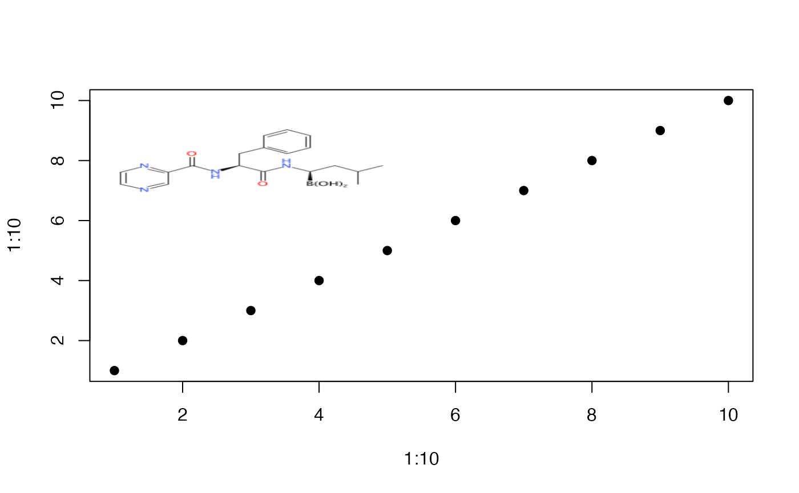
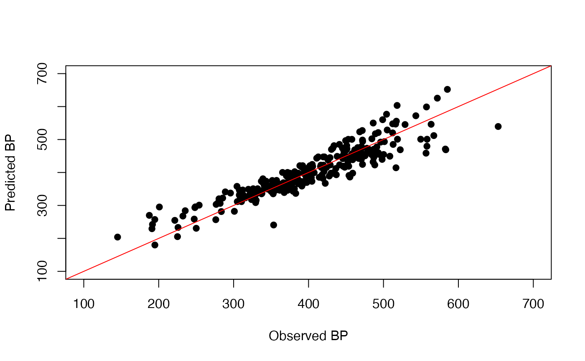

Using the CDK from R
Introduction
Given that much of cheminformatics involves mathematical and statistical modeling of chemical information, R is a natural platform for such work. There are many cheminformatics applications that will generate useful information such as descriptors, fingerprints and so on. While one can always run these applications to generate data that is then imported into R, it can be convenient to be able to manipulate chemical structures and generate chemical information with the R environment.
The CDK is a Java library for cheminformatics that supports a wide variety of cheminformatics functionality ranging from reading molecular file formats, performing ring perception and aromaticity detection to fingerprint generation and molecular descriptors. The CDK website provides links to useful documentation as well as complete Javadocs
Getting started
The goal of the rcdk package is to allow an R user to
access the cheminformatics functionality of the CDK from within R. While one can use
the rJava package
to make direct calls to specific methods in the CDK, from R, such usage does not
usually follow common R idioms. Thus rcdk aims to allow
users to use the CDK classes and
methods in an R-like fashion.
The library is loaded as follows
library(rcdk)## Loading required package: rcdklibs## Loading required package: rJavaWe can also check the version of the CDK that is being used in the package
## [1] "2.8"The package also provides an example data set, called
bpdata which contains 277 molecules, in SMILES format and
their associated boiling points (BP) in Kelvin. The
data.frame has two columns, viz., the SMILES and the BP.
Molecules names are used as row names:
## 'data.frame': 277 obs. of 2 variables:
## $ SMILES: chr "C(Br)(Cl)(Cl)Cl" "ClC(F)(F)F" "C(Cl)(Cl)(Cl)Cl" "C(F)(F)(F)F" ...
## $ BP : num 378 192 350 145 422 ...Input and Output
Chemical structures come in a variety of formats and the CDK supports many of them. Many such formats are disk based and these files can be parsed and loaded by specifying their full paths
mols <- load.molecules( c('data1.sdf', '/some/path/data2.sdf') )Note that the above function will load any file format that is
supported by the CDK, so there’s no need to specify formats. In addition
one can specify a URL (which should start with http://) to
specify remote files as well. The result of this function is a list of
molecule objects. The molecule objects are of class jobjRef
(provided by the rJava package). As a
result,they are pretty opaque to the user and are really meant to be
processed using methods from the rcdk or rJava packages.
However, since it loads all the molecules from the specified file into a list, large files can lead to out of memory errors. In such a situtation it is preferable to iterate over the file, one structure at a time. Currently this behavior is supported for SDF and SMILES files. An example of such a usage for a large SD file would be
iter <- iload.molecules('verybig.sdf', type='sdf')
while(hasNext(iter)) {
mol <- nextElem(iter)
print(get.property(mol, "cdk:Title"))
}Parsing SMILES
Another common way to obtain molecule objects is by parsing SMILES strings. The simplest way to do this is
smile <- 'c1ccccc1CC(=O)C(N)CC1CCCCOC1'
mol <- parse.smiles(smile)[[1]]Usage is more efficient when multiple SMILE are supplied, since then a single SMILES parser object is used to parse all the supplied SMILES.
If you plan on parsing a large number of SMILES, you may run into
memory issues, due to the large size of IAtomContainer
objects. In such a case, it can be useful to call the Java and R garbage
collectors explicitly at the appropriate time. In addition it can be
useful to explicitly allocate a large amount of memory for the JVM. For
example,
options("java.parameters"=c("-Xmx4000m"))
library(rcdk)
for (smile in smiles) {
m <- parse.smiles(smile)
## perform operations on this molecule
jcall("java/lang/System","V","gc")
gc()
}Given a list of molecule objects, it is possible to serialize them to a file in some specified format. Currently, the only output formats are SMILES or SDF. To write molecules to a disk file in SDF format.
write.molecules(mols, filename='mymols.sdf')By default, if mols is a list of multiple molecules, all of them will be written to a single SDF file. If this is not desired, you can write each on to individual files (which are prefixed by the value of filename):
write.molecules(mols, filename='mymols.sdf', together=FALSE)Generating SMILES
Finally, we can generate a SMILES representation of a molecule using
smiles <- c('CCC', 'c1ccccc1', 'CCCC(C)(C)CC(=O)NC')
mols <- parse.smiles(smiles)
get.smiles(mols[[1]])## [1] "CCC"## CCC c1ccccc1 CCCC(C)(C)CC(=O)NC
## "CCC" "C1=CC=CC=C1" "CCCC(C)(C)CC(=O)NC"The CDK supports a number of
flavors when generating SMILES. For example, you can generate a
SMILES with or without chirality information or generate SMILES in Kekule
form. The smiles.flavors generates an object that
represents the various flavors desired for SMILES output. See the SmiFlavor
javadocs for the full list of possible flavors. Example usage is
smiles <- c('CCC', 'c1ccccc1', 'CCc1ccccc1CC(C)(C)CC(=O)NC')
mols <- parse.smiles(smiles)
get.smiles(mols[[3]], smiles.flavors(c('UseAromaticSymbols')))## [1] "CCc1ccccc1CC(C)(C)CC(=O)NC"
get.smiles(mols[[3]], smiles.flavors(c('Generic','CxSmiles')))## [1] "CCC1=CC=CC=C1CC(C)(C)CC(=O)NC"Using the CxSmiles flavors allows the user to encode a variety of information in the SMILES string, such as 2D or 3D coordinates.
m <- parse.smiles('CCC')[[1]]
m <- generate.2d.coordinates(m)
m## [1] "Java-Object{AtomContainer(1466073198, #A:3, AtomRef{Atom(1564984895, S:C, H:3, 2D:[(-1.299038105676659, 1.1102230246251565E-15)], AtomType(1564984895, FC:0, Isotope(1564984895, Element(1564984895, S:C, AN:6))))}, AtomRef{Atom(1587819720, S:C, H:2, 2D:[(-7.771561172376096E-16, 0.7500000000000007)], AtomType(1587819720, FC:0, Isotope(1587819720, Element(1587819720, S:C, AN:6))))}, AtomRef{Atom(1002191352, S:C, H:3, 2D:[(1.887379141862766E-15, 2.250000000000001)], AtomType(1002191352, FC:0, Isotope(1002191352, Element(1002191352, S:C, AN:6))))}, #B:2, BondRef{Bond(1526298704, #O:SINGLE, #S:NONE, #A:2, AtomRef{Atom(1564984895, S:C, H:3, 2D:[(-1.299038105676659, 1.1102230246251565E-15)], AtomType(1564984895, FC:0, Isotope(1564984895, Element(1564984895, S:C, AN:6))))}, AtomRef{Atom(1587819720, S:C, H:2, 2D:[(-7.771561172376096E-16, 0.7500000000000007)], AtomType(1587819720, FC:0, Isotope(1587819720, Element(1587819720, S:C, AN:6))))}, ElectronContainer(1526298704EC:2))}, BondRef{Bond(1593180232, #O:SINGLE, #S:NONE, #A:2, AtomRef{Atom(1587819720, S:C, H:2, 2D:[(-7.771561172376096E-16, 0.7500000000000007)], AtomType(1587819720, FC:0, Isotope(1587819720, Element(1587819720, S:C, AN:6))))}, AtomRef{Atom(1002191352, S:C, H:3, 2D:[(1.887379141862766E-15, 2.250000000000001)], AtomType(1002191352, FC:0, Isotope(1002191352, Element(1002191352, S:C, AN:6))))}, ElectronContainer(1593180232EC:2))})}"
get.smiles(m, smiles.flavors(c('CxSmiles')))## [1] "CCC"
get.smiles(m, smiles.flavors(c('CxCoordinates')))## [1] "CCC |(-1.3,0,;-0,0.75,;0,2.25,)|"Visualization
The rcdk package supports 2D rendering of chemical
structures. This can be used to view the structure of individual
molecules or multiple molecules in a tabular format. It is also possible
to view a molecular-data table, where one of the columns is the 2D image
and the remainder can contain data associated with the molecules.
Due to Java event handling issues on OS X, depictions are handled using an external helper, which means that depiction generation can be slower on OS X compared to other platforms.
Molecule visualization is performed using the
view.molecule.2d function. This handles individual
molecules as well as a list of molecules. In the latter case, the
depictions are arranged in a grid (with 4 columns by default).
smiles <- c('CCC', 'CCN', 'CCN(C)(C)',
'c1ccccc1Cc1ccccc1',
'C1CCC1CC(CN(C)(C))CC(=O)CC')
mols <- parse.smiles(smiles)
view.molecule.2d(mols[[1]])
view.molecule.2d(mols)The CDK depiction routines allow for extensive customization. These
customizations can be accessed by creating a depictor object using
get.depictor, which allows you to specify the size of the
depiction, the depiction style (black and white, color on white, etc.),
atom annotations (e.g., atom index), whether functional group
abbreviations should be used or not and so on.
depictor <- get.depictor(style='cob', abbr='reagents', width=300, height=300)
view.molecule.2d(mols[[5]], depictor=depictor)Once you have a depictor object, you can set individual properties
using the $ notation. This can be useful if you plan to
generate a lot of depictions so that a new depictor is not recreated for
each new structure.
depictor <- get.depictor(style='cob', abbr='reagents', width=300, height=300)
view.molecule.2d(mols[[5]], depictor=depictor)
#depictor$setStyle('cow')
#view.molecule.2d(mols[[5]], depictor=depictor)The method also allows you to highlight substructures using SMARTS. This is useful in highlight commen substructures in a set of molecules
depictor <- get.depictor(style='cob', abbr='reagents', sma='N(C)(C)')
view.molecule.2d(mols, depictor=depictor)In many cases, it is useful to view a “molecular spreadsheet”, which is a table of molecular structures along with information (numeric or textual) related to the molecules being viewed. The data is arranged in a spreadsheet like manner, with one of the columns being molecules and the remainder being textual or numeric information.
This can be achieved using the view.table method which
takes a list of molecule objects and a data.frame
containing the associated data. As expected, the number of rows in the
data.frame should equal the length of the molecule list.
Note that currently, there is not explicit binding between the rows of
the data.frame and the elements of the list containing the
molecules. Thus the user should take care that the ordering of the
data.frame matches that of the list.
smiles <- c('CCC', 'CCN', 'CCN(C)(C)','c1ccccc1Cc1ccccc1')
mols <- parse.smiles(smiles)
dframe <- data.frame(x = runif(4),
toxicity = factor(c('Toxic', 'Toxic', 'Nontoxic', 'Nontoxic')),
solubility = c('yes', 'yes', 'no', 'yes'))
view.table(mols, dframe)While the view.molecule.2d function is useful to
visualize structures, the depictions can’t be included in other
visualizations such as plots. For such use cases, the
view.image.2d function produces a raster image that can be
included in plots. This function handles one molecule at a time.
img <- view.image.2d(parse.smiles("B([C@H](CC(C)C)NC(=O)[C@H](CC1=CC=CC=C1)NC(=O)C2=NC=CN=C2)(O)O")[[1]])
plot(1:10, 1:10, pch=19)
rasterImage(img, 1,6, 5,10)
Finally, the copy.image.to.clipboard function allows you
to copy a depiction to the system clipboard, from where it can be pasted
into other applications. This can be more convenient than saving a
raster image.
Manipulating Molecules
In general, given a jobjRef for a molecule object one
can access all the class and methods of the CDK library via rJava. However this can
be cumbersome. The rcdk package exposes methods and classes
that manipulate molecules.
Adding Information to Molecules
In many scenarios it’s useful to associate information with
molecules. Within R, you could always create a data.frame
and store the molecule objects along with relevant information in it.
However, when serializing the molecules, you want to be able to store
the associated information with the structure itself (though keep in
mind that only certain chemical file formats support metadata along with
the structure).
Using the CDK it’s possible to
directly add information to a molecule object using properties. Note
that adding such properties uses a key-value paradigm, where the key
should be of class character. The value can be of class
integer, double, character or
jobjRef. Obviously, after setting a property, you can get a
property by its key.
mol <- parse.smiles('c1ccccc1')[[1]]
set.property(mol, "title", "Molecule 1")
set.property(mol, "hvyAtomCount", 6)
get.property(mol, "title")## [1] "Molecule 1"It is also possible to get all available properties at once in the from of a list. The property names are used as the list names.
get.properties(mol)## $`cdk:Title`
## [1] NA
##
## $title
## [1] "Molecule 1"
##
## $hvyAtomCount
## [1] 6After adding such properties to the molecule, you can write it out to an SD file, so that the property values become SD tags.
write.molecules(mol, 'tagged.sdf', write.props=TRUE)Atoms and Bonds
Probably the most important thing to do is to get the atoms and bonds
of a molecule. The code below gets the atoms and bonds as lists of
jobjRef objects, which can be manipulated using rJava or
via other methods of this package.
mol <- parse.smiles('c1ccccc1C(Cl)(Br)c1ccccc1')[[1]]
atoms <- get.atoms(mol)
bonds <- get.bonds(mol)
cat('No. of atoms =', length(atoms), '\n')## No. of atoms = 15## No. of bonds = 16Given an atom the rcdk package does not offer a lot of
methods to operate on it. One must access the CDK directly. In the future more
manipulators will be added. Right now, you can get the symbol for each
atom
## [1] "C" "C" "C" "C" "C" "C" "C" "Cl" "Br" "C" "C" "C" "C" "C" "C"It’s also possible to get the 3D (or 2D coordinates) for an atom.
coords <- get.point3d(atoms[[1]])Given this, it’s quite easy to get the 3D coordinate matrix for a molecule
Once you have the coordinate matrix, a quick way to check whether the molecule is flat is to do
## [1] "molecule is flat"This is quite a simplistic check that just looks at whether the X, Y or Z coordinates are constant. To be more rigorous one could evaluate the moments of inertia about the axes.
Substructure matching
The CDK library supports
substructure searches using SMARTS
(or SMILES) patterns. The implementation allows one to check whether a
target molecule contains a substructure or not as well as to retrieve
the atoms and bonds of the target molecule that match the query
substructure. At this point, the rcdk only support the
former operation - given a query pattern, does it occur or not in a list
of target molecules. The matches method of this package
returns a logical vector where the \(i\)’th element is TRUE if the
\(i\)’th target molecules contains the
query substructure. An example of its usage would be to identify
molecules that contain a carbon atom that has exactly two bonded
neighbors.
mols <- parse.smiles(c('CC(C)(C)C','c1ccc(Cl)cc1C(=O)O', 'CCC(N)(N)CC'))
query <- '[#6D2]'
matches(query, mols)## CC(C)(C)C.match c1ccc(Cl)cc1C(=O)O.match CCC(N)(N)CC.match
## FALSE TRUE TRUEMolecular Descriptors
A key requirement for the predictive modeling of molecular properties and activities are molecular descriptors - numerical characterizations of the molecular structure. The CDK implements a variety of molecular descriptors, categorized into topological, constitutional, geometric, electronic and hybrid. It is possible to evaluate all available descriptors at one go, or evaluate individual descriptors.
First, we can take a look at the available descriptor categories.
dc <- get.desc.categories()
dc## [1] "protein" "hybrid" "constitutional" "topological"
## [5] "electronic" "geometrical"Given the categories we can get the names of the descriptors for a single category. Of course, you can always provide the category name directly.
dn <- get.desc.names(dc[4])
dn## [1] "org.openscience.cdk.qsar.descriptors.molecular.SmallRingDescriptor"
## [2] "org.openscience.cdk.qsar.descriptors.molecular.FractionalPSADescriptor"
## [3] "org.openscience.cdk.qsar.descriptors.molecular.ZagrebIndexDescriptor"
## [4] "org.openscience.cdk.qsar.descriptors.molecular.WienerNumbersDescriptor"
## [5] "org.openscience.cdk.qsar.descriptors.molecular.WeightedPathDescriptor"
## [6] "org.openscience.cdk.qsar.descriptors.molecular.VAdjMaDescriptor"
## [7] "org.openscience.cdk.qsar.descriptors.molecular.VABCDescriptor"
## [8] "org.openscience.cdk.qsar.descriptors.molecular.TPSADescriptor"
## [9] "org.openscience.cdk.qsar.descriptors.molecular.PetitjeanShapeIndexDescriptor"
## [10] "org.openscience.cdk.qsar.descriptors.molecular.PetitjeanNumberDescriptor"
## [11] "org.openscience.cdk.qsar.descriptors.molecular.MDEDescriptor"
## [12] "org.openscience.cdk.qsar.descriptors.molecular.KierHallSmartsDescriptor"
## [13] "org.openscience.cdk.qsar.descriptors.molecular.KappaShapeIndicesDescriptor"
## [14] "org.openscience.cdk.qsar.descriptors.molecular.HybridizationRatioDescriptor"
## [15] "org.openscience.cdk.qsar.descriptors.molecular.FragmentComplexityDescriptor"
## [16] "org.openscience.cdk.qsar.descriptors.molecular.FMFDescriptor"
## [17] "org.openscience.cdk.qsar.descriptors.molecular.EccentricConnectivityIndexDescriptor"
## [18] "org.openscience.cdk.qsar.descriptors.molecular.ChiPathDescriptor"
## [19] "org.openscience.cdk.qsar.descriptors.molecular.ChiPathClusterDescriptor"
## [20] "org.openscience.cdk.qsar.descriptors.molecular.ChiClusterDescriptor"
## [21] "org.openscience.cdk.qsar.descriptors.molecular.ChiChainDescriptor"
## [22] "org.openscience.cdk.qsar.descriptors.molecular.CarbonTypesDescriptor"
## [23] "org.openscience.cdk.qsar.descriptors.molecular.AutocorrelationDescriptorPolarizability"
## [24] "org.openscience.cdk.qsar.descriptors.molecular.AutocorrelationDescriptorMass"
## [25] "org.openscience.cdk.qsar.descriptors.molecular.AutocorrelationDescriptorCharge"Each descriptor name is actually a fully qualified Java class name
for the corresponding descriptor. These names can be supplied to
eval.desc to evaluate a single or multiple descriptors for
one or more molecules.
The return value of eval.desc is a data.frame with the
descriptors in the columns and the molecules in the rows. For the above
example we get a single row. But given a list of molecules, we can
easily get a descriptor matrix.
For example, let’s build a linear regression model to predict boiling points for the BP dataset. First we need a set of descriptors and so we evaluate all available descriptors. Also note that since a descriptor might belong to more than one category, we should obtain a unique set of descriptor names
descNames <- unique(unlist(sapply(get.desc.categories(), get.desc.names)))For the current discussion we focus on a few, manually selected descriptors that we know will be related to boiling point.
data(bpdata)
mols <- parse.smiles(bpdata[,1])
descNames <- c(
'org.openscience.cdk.qsar.descriptors.molecular.KierHallSmartsDescriptor',
'org.openscience.cdk.qsar.descriptors.molecular.APolDescriptor',
'org.openscience.cdk.qsar.descriptors.molecular.HBondDonorCountDescriptor')
descs <- eval.desc(mols, descNames)
class(descs)## [1] "data.frame"
dim(descs)## [1] 277 81When a descriptor value cannot be computed, it’s value is set to
NA. This may happen if a descriptor requires 3D
coordinates, but only 2D coordinates are available. In this case, we
have manually selected descriptors such that there will be no undefined
values.
Given the ubiquity of certain descriptors, some of them are directly
available via their own functions. Specifically, one can calculate TPSA (topological
polar surface area), AlogP and XlogP without
having to go through eval.desc. (Note that AlogP and XlogP
assume that hydrogens are explicitly specified in the molecule. This may
not be true if the molecules were obtained from SMILES)
mol <- parse.smiles('CC(=O)CC(=O)NCN')[[1]]
convert.implicit.to.explicit(mol)
get.tpsa(mol)## [1] 72.19
get.xlogp(mol)## [1] -0.883
get.alogp(mol)## [1] -1.7019Now that we have a descriptor matrix, we easily build a linear
regression model. First, remove NA’s, correlated and
constant columns. The code is shown below, but since it involves a
stochastic element, we will not run it for this example. If we were to
perform feature selection, then this type of reduction would have to be
performed.
descs <- descs[, !apply(descs, 2, function(x) any(is.na(x)) )]
descs <- descs[, !apply( descs, 2, function(x) length(unique(x)) == 1 )]
r2 <- which(cor(descs)^2 > .6, arr.ind=TRUE)
r2 <- r2[ r2[,1] > r2[,2] , ]
descs <- descs[, -unique(r2[,2])]Note that the above correlation reduction step is pretty crude and there are better ways to do it. Given the reduced descriptor matrix, we can perform feature selection (say using leaps, caret or a GA to identify a suitable subset of descriptors. Given that we selected the descriptors by hand, we can skip this section, and directly build the model and generate a plot of predicted versus observed BP. (Note that this is a toy example and is not an example of good QSAR practice!)
model <- lm(BP ~ khs.sCH3 + khs.sF + apol + nHBDon, data.frame(bpdata, descs))
summary(model)##
## Call:
## lm(formula = BP ~ khs.sCH3 + khs.sF + apol + nHBDon, data = data.frame(bpdata,
## descs))
##
## Residuals:
## Min 1Q Median 3Q Max
## -94.395 -20.911 -1.168 19.574 114.237
##
## Coefficients:
## Estimate Std. Error t value Pr(>|t|)
## (Intercept) 267.3135 6.0006 44.548 <2e-16 ***
## khs.sCH3 -22.7948 2.0676 -11.025 <2e-16 ***
## khs.sF -24.4121 2.6548 -9.196 <2e-16 ***
## apol 8.6211 0.3132 27.523 <2e-16 ***
## nHBDon 47.1187 3.7061 12.714 <2e-16 ***
## ---
## Signif. codes: 0 '***' 0.001 '**' 0.01 '*' 0.05 '.' 0.1 ' ' 1
##
## Residual standard error: 34.08 on 272 degrees of freedom
## Multiple R-squared: 0.837, Adjusted R-squared: 0.8346
## F-statistic: 349.1 on 4 and 272 DF, p-value: < 2.2e-16
plot(bpdata$BP, predict(model, descs),
xlab="Observed BP", ylab="Predicted BP",
pch=19, xlim=c(100, 700), ylim=c(100, 700))
abline(0,1, col='red')
Fingerprints
Fingerprints are a common representation used for a variety of
purposes such as similarity searching and predictive modeling. The CDK provides a variety of fingerprints
ranging from path-based hashed fingerprints to circular (specifically,
an implementation fo the ECFP
fingerprints) and signature fingerprints (based on the signature
molecular descriptor). Some of the fingerprints are represented as
binary strings and other by integer vectors. The rcdk
employs the fingerprint
package to support operations on the resultant fingerprints.
In this section, we present an example of using fingerprints to
generate a hierarchical clustering of a set of molecules from the
included boiling point dataset. We first parse the SMILES for the
molecules in the dataset and then compute the fingerprints, specifying
the circular type.
data(bpdata)
mols <- parse.smiles(bpdata[,1])
fps <- lapply(mols, get.fingerprint, type='circular')With the fingerprints, we can then compute a pairwise similarity
matrix using the Tanimoto
metric. Since R’s hclust method requires a distance matrix,
we convert the similarity matrix to a distance matrix
fp.sim <- fingerprint::fp.sim.matrix(fps, method='tanimoto')
fp.dist <- 1 - fp.simFinally, we can perform the clustering. In this case we use the
hclust method though any of R’s clustering methods could be
used.
Another common task for fingerprints is similarity searching. That is, given a collection of target molecules, find those molecules that are similar to a query molecule. This is achieved by evaluating a similarity metric between the query and each of the target molecules. Those target molecules exceeding a user defined cutoff will be returned. With the help of the fingerprint package this is easily accomplished.
For example, we can identify all the molecules in the BP dataset that have a Tanimoto similarity of 0.3 or more with acetalehyde, and then create a tabular summary. Note that this could also be accomplished with molecular descriptors, in which case you’d probably evaluate the Euclidean distance between descriptor vectors.
query.mol <- parse.smiles('CC(=O)')[[1]]
target.mols <- parse.smiles(bpdata[,1])
query.fp <- get.fingerprint(query.mol, type='circular')
target.fps <- lapply(target.mols, get.fingerprint, type='circular')
sims <- data.frame(sim=do.call(rbind, lapply(target.fps,
fingerprint::distance,
fp2=query.fp, method='tanimoto')))
subset(sims, sim >= 0.3)## sim
## C(=O)O 0.3333333
## COC=O 0.3636364
## CCC=O 0.3636364
## CC(C)C=O 0.3636364